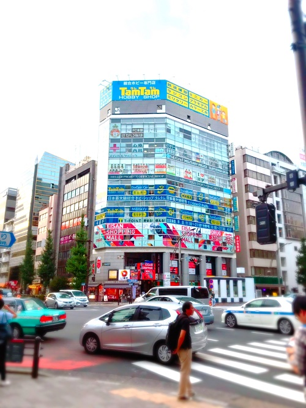

夏季長期インターンシップに参加しました。場所は東京メトロ銀座線末広町駅近くの企業です。
内容は営業部署で営業先への同行と事務や雑務でした。私が将来就きたいと考えている職種や業界とは異なる企業でしたが、せっかくのご縁なので参加させていただきました。
正直にいうと期待していなかった部分もありましたが、結果的にとても有意義で貴重な体験になりました。何よりも将来の職で何をやりたいかということを考えたときに私自身、今まで思い描かなかったのが、インターンシップを通してみつけられたことが大きな収穫でした。
このインターンシップの経験をもとにこれからの就職活動に励みたいと思います。